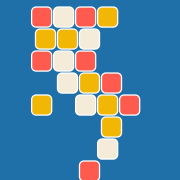
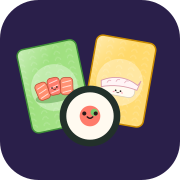
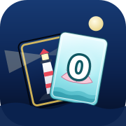
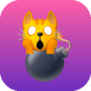

Il tavolo da gioco
che sta in tasca.
Giochi da fare con gli amici, ognuno dal proprio telefono, nella stessa stanza o a distanza. Crea un account gratuito, apri un tavolo e manda il link o invita gli amici.
Continua la partita
Tavoli aperti adesso
Cerco i tavoli aperti…
Tutti i giochi
Tocca una categoria per vedere i giochi che contiene.
Nomi, cose, città
Esce una lettera e con la tua squadra riempite insieme il foglio: nome, cosa, città, animale… ognuno dal proprio telefono, anche a distanza. Le parole che nessun altro ha scritto valgono di più.
Disegna e indovina
A turno uno disegna con il dito e i compagni indovinano la parola, mentre gli avversari guardano il disegno in diretta pronti a rubarla. Si gioca anche a distanza.
Sintonia
Esce un tema («Un frutto rosso») e ognuno scrive di nascosto la prima cosa che gli viene in mente: la squadra fa punti quando i compagni scrivono la stessa parola. Vietato mettersi d’accordo!
Tiro alla fune
Una griglia di lettere uguale per tutti: trova parole con lettere vicine e ogni parola tira la corda verso la tua squadra, in diretta. Più è lunga, più tira!

Conquista l’Italia
Domande di cultura generale e stime: chi risponde giusto per primo conquista una regione per la sua squadra. Finite le regioni libere, si strappano quelle degli avversari!
Briscola
Il classico con le carte italiane: asso, tre, re, cavallo e fante. Uno contro uno o due contro due, con i segni al compagno che gli avversari non vedono.
Scopa
Prendi le carte dalla tavola, fai scopa e conquista settebello, denari e primiera. Uno contro uno o due contro due, anche a Scopone scientifico.
Burraco
Scale, tris, pinelle e jolly: cala le combinazioni con il tuo compagno, fai burraco, prendi il pozzetto e chiudi. Uno contro uno o due contro due.
Machiavelli
Il gioco di carte italiano in cui il tavolo è di tutti: cala tris, poker e scale, smonta e rimonta le combinazioni e liberati per primo delle carte.
Skyjo
Dodici carte coperte a testa: scambiale, scoprile, fai sparire le colonne di tre carte uguali e chiudi la manche con meno punti di tutti. Con le varianti Skyjo Action (stelle e carte Azione) ed eliminazione.
Flip 7
Pesca carte una alla volta e fermati prima del doppione: sette numeri diversi valgono il Flip 7. Congela gli amici o costringili a rischiare con le azioni a sorpresa.
No Grazie!
Una carta alla volta: la prendi o paghi un gettone e dici «No grazie!». Le carte in scala contano solo per la più bassa e chi prende la carta si porta via anche i gettoni.
Prendi 6!
Tutti insieme giocate una carta e le carte si mettono in fila dalla più bassa: chi mette la sesta in una fila se la prende, con tutte le sue teste di toro. Fino a 10 giocatori!

Sushi Go!
Tutti insieme scegliete una carta e passate la mano al vicino: tris di sashimi, coppie di tempura, gyoza, maki e nigiri sul wasabi. Tre manche veloci, senza mai aspettare il proprio turno.

Cabo
Quattro carte coperte e ne conosci solo due: ricordale, sbircia, spia gli altri, scambia le carte e chiama «Cabo» quando pensi di avere meno punti di tutti.

Exploding Kittens
Gioco di carte esplosivo: pesca senza far scoppiare la Gattomina, soffia sulle mosse altrui e resta l’ultimo intero.
Wizard
Gioco di carte a prese: prevedi quante ne farai, poi fanne esattamente quelle. Con Arcimaghi e Giullari.
Bang!
Gioco di carte western a ruoli segreti: Sceriffo, Vice, Fuorilegge e Rinnegato. Con Dodge City e gli eventi di Mezzogiorno di Fuoco e Per un Pugno di Carte.
Il Forziere Maledetto
Levante contro Ponente, con un Pirata o due Corsari nascosti tra i capitani: prendi il comando di una nave, spara bordate e porta il Forziere verso la tua bandiera. Ma di chi ti puoi fidare?
Citadels
Ogni round scegli in segreto un personaggio: Assassino, Ladro, Re, Mercante… Raccogli oro, costruisci i quartieri e manda all’aria i piani degli altri. Vince la città più ricca.
Catan
Coloni su un’isola da scoprire: raccogli legname, argilla, lana, grano e minerale, commercia e costruisci strade, colonie e città.
Ticket to Ride Italy
Treni sulla mappa d’Italia: conquista le tratte, attraversa il mare con le carte Traghetto, raggiungi i Paesi confinanti e unisci più regioni possibili.
Scythe
Strategia dieselpunk: cinque fazioni con mech e personaggi si contendono le campagne intorno a una vecchia Fabbrica.
Nessun gioco trovato: prova con un’altra parola.